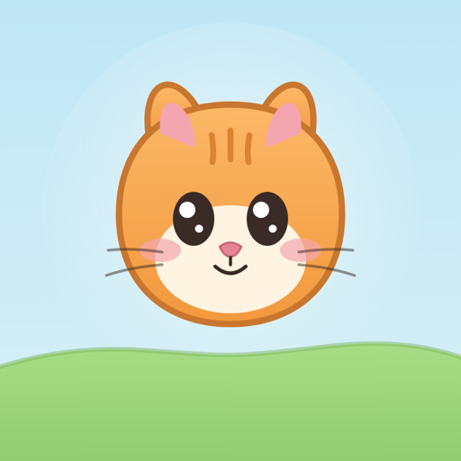
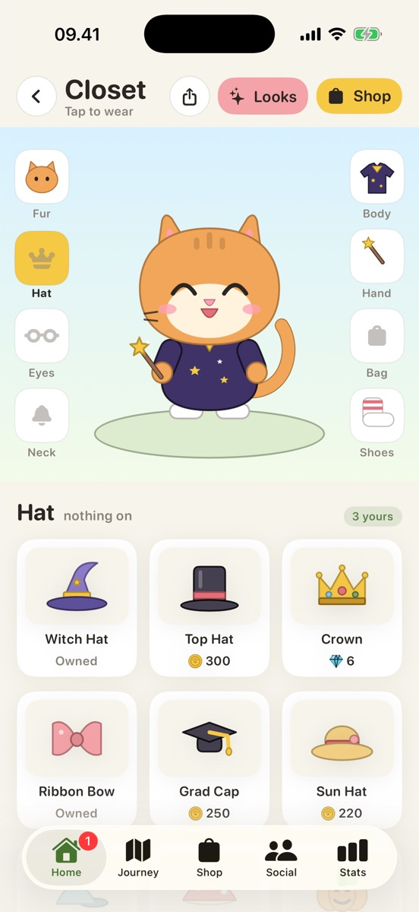
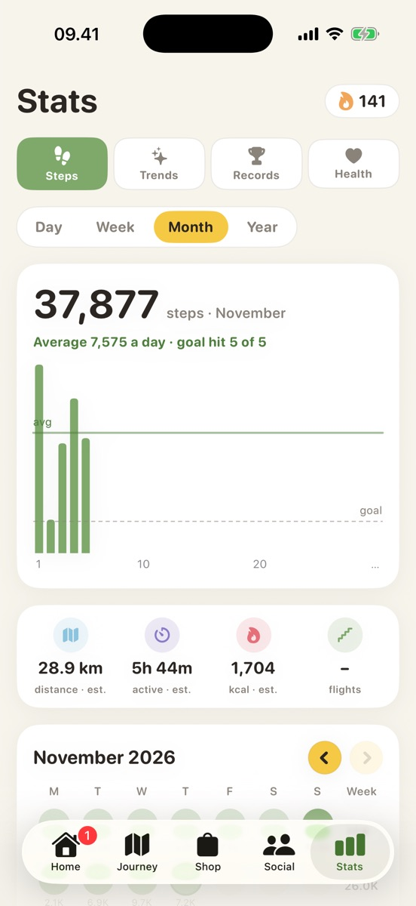
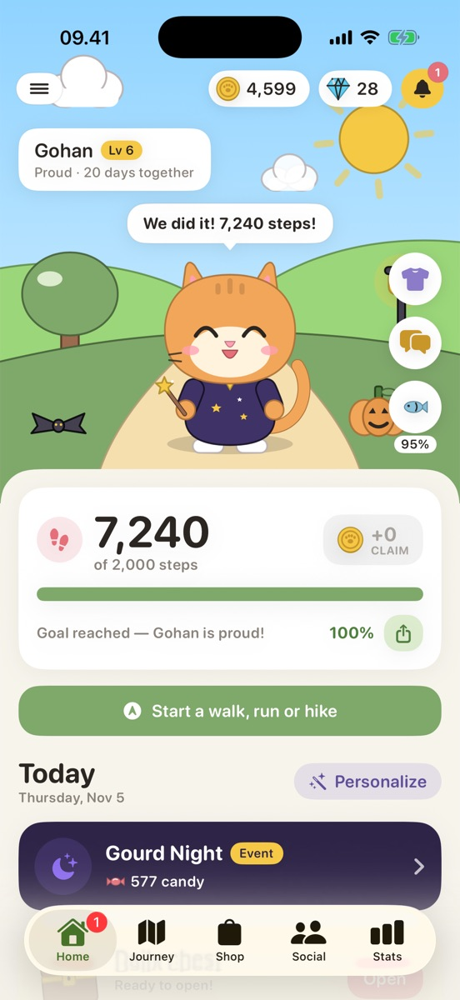

Walks, runs & hikes
Record a trek with a live route map, pace and km splits. It shows on your lock screen and saves as a workout in Apple Health.

MeowtrekMeowtrek turns your daily steps into a little life for your cat. Walk to earn coins, dress them up, unlock places on your journey and keep each other going.



No new habits to learn. Meowtrek reads the steps your iPhone and Apple Watch already count.
Steps come in from Apple Health, Apple Watch, Fitbit or Garmin. Your cat cheers when you're close to your daily goal.
Every 10 steps is a coin. Daily quests and the daily chest add more, and streaks earn gems.
Spend coins on hats, glasses, scarves and outfits, unlock landmarks on your journey and collect seasonal event items.
Record a trek with a live route map, pace and km splits. It shows on your lock screen and saves as a workout in Apple Health.
Chat with your cat about your week, get a weekly insight and quests tuned to your rhythm. On-device with Apple Intelligence where available.
Gourd Night in autumn, Frost Fair in winter, Bloom Walk in spring, Sunny Trail in summer. Collect tokens by walking for items you can't buy.
Your cat on your wrist with today's steps and a workout mode, plus home and lock screen widgets on iPhone.
Swap friend cards for a weekly leaderboard, and share your steps, streak, outfit or route straight to Instagram Stories.
Feed treats, track water, and snap your meals for a playful reaction. No calorie counting, ever.
Everything that gets you moving is free. Plus adds the AI coach and a few comforts for your cat.
Yearly starts with a 1-week free trial. Cancel any time in Settings.
Meowtrek has no accounts, no ads and no third-party tracking.
Everything about steps, trackers, privacy and Meowtrek Plus. Can't find yours?
Visit supportYes. Steps, goals, quests, the wardrobe, journey, seasonal events, trek recording, widgets and the Apple Watch app are all free. Meowtrek Plus adds the unlimited AI cat coach, weekly insights, 1.5× coins, a weekly streak freeze and daily iCloud backup.
No. Your iPhone counts steps on its own. An Apple Watch, Fitbit or Garmin just makes the count more complete, and Meowtrek takes the highest count for each day so nothing is double counted.
Anything that syncs to Apple Health works automatically: Apple Watch, Mi Band, Zepp, Huawei, Oura, Withings and more. Fitbit and Garmin can also be linked directly.
Your steps, routes and water stay on your iPhone and in Apple Health. There are no accounts, ads or third-party trackers. AI features only send what they need to answer, and our server doesn't store it. Read the privacy policy.
On iPhones with Apple Intelligence, chat, insights and quests run on the device. Other iPhones use our cloud coach. Meal reactions always use the cloud.
Yes. Meowtrek speaks English and Bahasa Indonesia and follows your iPhone's language, including the cat coach.
Your step history stays in Apple Health. With Meowtrek Plus your cat, coins, items and treks are backed up to your private iCloud every day, so you can restore them on a new iPhone.